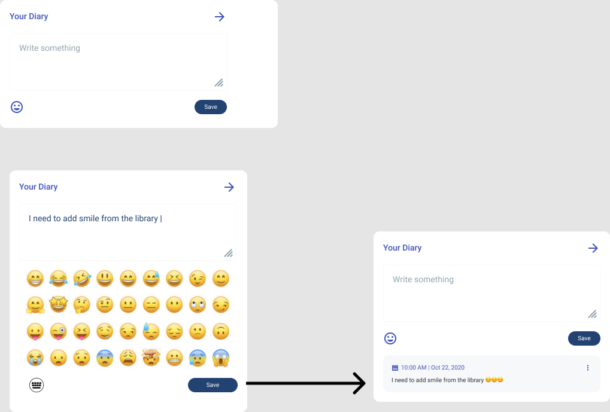
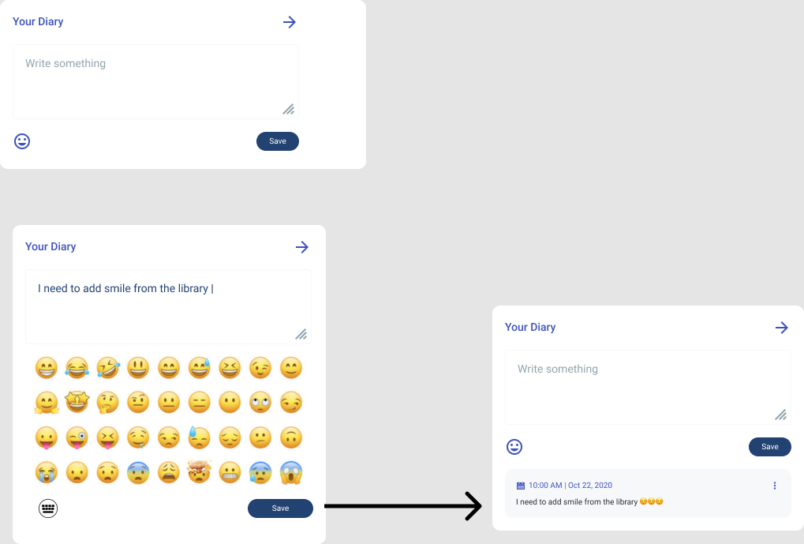

Maintenance
In case of any problems or the need for changes,I can introduce new functionalities and solutions to most websites and web apps.
my name is Lidz Maqolwana,
.png)


This section is a cosmetic section, meaning it isn't supposed
to exist. But anyways I justed wanted to express my views on creativity cause
it seems like these days creativity is at the center of almost every facet of
our lives, therefore I think creativity in general should be explored and this exploration
should be a systematic and rigour exploration, in which we don't get excited by the results of creativity,
but rather we get excited by the source of creativity, so that we can wield it at our will.
I believe that creativity is a force that arises when all of the blockages to creativity are removed,
i think by finding these blockages we automatically find the source of creativity as well.And these blockages
are different depending on the particular situations that an individual is in,
therefore the is no mechanical solution to the problems of creativity, infact I oppose
these ideas of finding solutions to problems cause these ideas imply that the solution is
independent of the problem, in which the solution is always somehow hidden in the deep roots of the problem
therefore its impossible to find the solution without being friends with the problem, I guess I shoul stop now.
My Name is Lidz Maqolwana and I enjoy writing web programmes for almost
the same reasons as others do, which is as frontend developers we get to play, play around
with animations, styles, hiding and showing parts of the UI when neccessary its like playing peekaboo
with the users its quite an amazing field to be in.
I'm a huge fan of inquiry and exploration,
in any field I think its important to question prevailing dogmas, cause most of our ideas on how things
are done or how they should be are not based on truth, so inquiry and exploration exposes those untruths.
I would
love to write more about myself and what interests me, but its almost impossible to capture who I'am in words, I think
we as people can only experience who we are because who we are is mostly based on how we feel about thing, and therefore its impossible to accuratly discribe
feelings, thats why I cant continue writing about myself unless you prefer lies, please forgive.


Most of my web designs are done by mixing web resources that i get on the internet and from the figma community

Based on a project created by me or another one, sent by you, I can program the website to be fully functional and responsive.
In case of any problems or the need for changes,I can introduce new functionalities and solutions to most websites and web apps.
 CSS
CSS
 SCSS
SCSS
 Angular
Angular

.png) 
